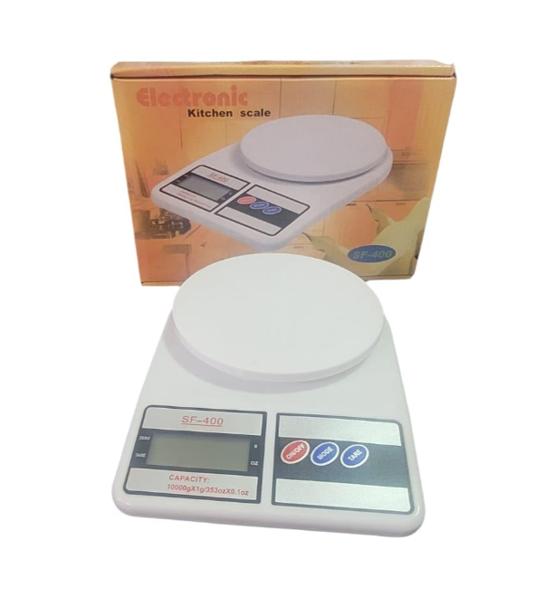
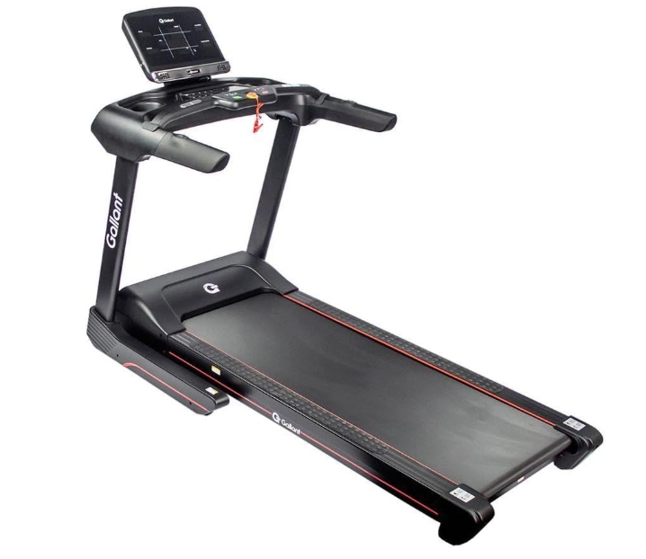

Let’s Gym Talk
Academia, ciência e motivação
Academia, ciência e motivação
Se você quer emagrecer, perder barriga ou reduzir gordura corporal, você precisa entender um conceito simples: déficit calórico.
O déficit calórico é a base do emagrecimento. Sem ele, mesmo com treino pesado, a perda de gordura se torna muito difícil. A boa notícia é que, quando feito corretamente, o déficit pode gerar resultados reais sem destruir sua saúde e sem causar perda excessiva de massa muscular.
Déficit calórico acontece quando você consome menos calorias do que seu corpo gasta no dia. Ou seja: você está gastando mais energia do que está ingerindo.
Nesse cenário, o corpo precisa buscar energia em reservas internas (principalmente gordura corporal), o que leva ao emagrecimento.
A forma mais prática de saber é observar o peso e medidas ao longo do tempo. Se você está perdendo peso (principalmente gordura) de forma gradual, provavelmente está em déficit.
Mas atenção: oscilações de peso são normais devido a retenção de líquidos, digestão e variação hormonal. O ideal é analisar a média semanal e não apenas um dia.
Primeiro, você precisa saber aproximadamente quantas calorias seu corpo gasta por dia (TDEE). Depois, você reduz uma parte dessas calorias.
Um déficit comum e seguro costuma ser algo entre 300 a 500 calorias por dia. Isso geralmente gera uma perda de gordura constante e sustentável.
Uma meta comum é perder entre 0,5% e 1% do peso corporal por semana. Isso reduz o risco de perda muscular e torna o processo mais saudável.
O maior medo de quem faz dieta é perder músculo. Para evitar isso, três coisas são fundamentais:
A musculação envia um sinal para o corpo: “mantenha o músculo”. Sem treino de força, o corpo pode perder massa magra junto com gordura.
Muitos estudos apontam que, em dieta de emagrecimento, consumir entre 1,6g a 2,2g de proteína por kg pode ajudar a preservar massa muscular.
Não. O emagrecimento depende do total de calorias, não do carboidrato. Porém, carboidratos podem influenciar energia no treino e saciedade.
Muitas pessoas cortam carboidrato e emagrecem porque acabam comendo menos calorias. Mas não é obrigatório.
Não é obrigatório, mas ajuda bastante. Cardio aumenta gasto calórico e melhora saúde cardiovascular. O ideal é equilibrar cardio + musculação.
O déficit calórico é a ferramenta mais importante para emagrecer. Porém, o melhor déficit é aquele que você consegue manter por meses, com energia, saúde e consistência.
⚠️ Este artigo é educativo e não substitui acompanhamento médico ou nutricional.
Leia também: Superávit calórico e Treino iniciante 3x por semana.
Esses produtos não são obrigatórios, mas podem facilitar sua dieta e sua rotina.

Ajuda a medir alimentos e controlar calorias com mais precisão.
Qualidade: ⭐⭐⭐⭐⭐
Uso: Pese alimentos para estimar porções.
Ver na Amazon
Esteira Ergométrica Elétrica Gallant Elite Pro 4,5hp 20km/h 160kg 15 Níveis de Inclinação 220v (gee15e45a-220pt)
Qualidade: ⭐⭐⭐⭐⭐
Uso: Pode ser usado como acessório para ajudar no déficit calórico.
Ver na Amazon